How to build high performing teams inspired by nature

It was a hot August day in Cyprus. I was outside, eating a local candy. One of those middle eastern sweets that melt in your mouth. It was delicious, but every time I took a bite, several crumbs dropped to the ground.
Just minutes later dozens of ants surrounded those pieces and started doing something magical.

They dispersed and organically split into teams. Smaller pieces were carried by a single ant. Bigger ones were handled by several of them. In a minute there were no crumbs left anymore. Full of fascination, I watched ants carrying their loot towards a crack in the ground.

What a great example of efficiency and teamwork, I thought. At that time Bohdan (my co-founder) and I were already talking about what would become Teambit, so I wanted to learn more from ants about teamwork.
Ants as a metaphor for teamwork are deeply rooted in our popular culture. If you Google `teamwork`, after two or three terrible stock pictures, you are guaranteed to stumble on an image of ants (no doubt also terrible).

Ants are perceived as hardworking and highly collaborative creatures. But can we actually learn something meaningful from their way of work?
😭 The way we work doesn’t work
We need to look for inspirations for how to work not just out of curiosity. Problem is the way we work doesn’t work anymore.
We evolved to work in small and organisationally simple bands of hunter-gatherers. It took a team to slay a mammoth or keep the fire on, so a collaboration was paramount.
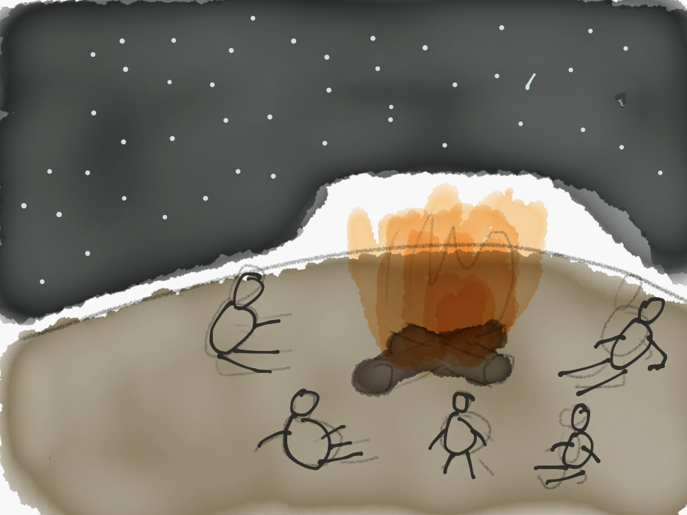
Survival was a single concern and everyone was focused on finding food and defending from dangers. Most of the knowledge was shared and almost everyone could do the work of anyone else.
But then the agricultural revolution transformed this centuries-old way of life. People started flocking into larger societies, at first focused around cities and later around countries. The need for a different organisational structure became apparent. A large organization, on the scale of a city or a state simply couldn’t be sustained on the same principles as small autonomous tribes.
Bureaucracy and complex hierarchy were gradually invented. Ancient city-states, medieval kingdoms or nineteenth-century armies all employed the same basic hierarchical structure to govern large bodies of people. It seemed like a formula proven by time. No wonder the most successful armies, like Mongolian, are regularly compared to a robot, controlled by a single brain.
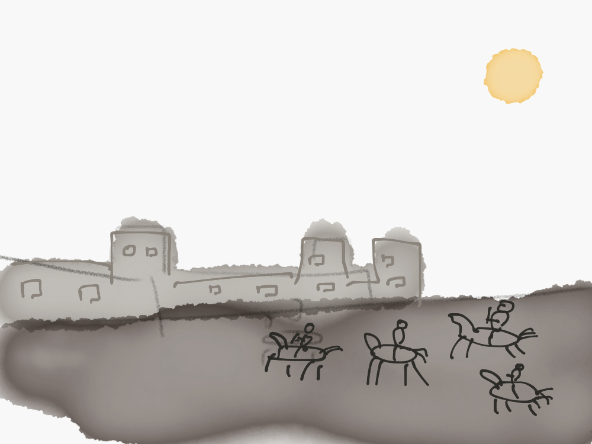
At the same time, most of the businesses stayed rather small and not much different from those tribes. Usually, they employed just one of two people who were doing almost everything interchangeably.
Up until the start of the Industrial Revolution.
The manufacturing process quickly evolved from manual to machine production. Family shops gave way to factories and workers became operators, not artisans.
To sustain efficiency in the world of machine production, people had to follow a manual, to be easily trainable and easily replaceable.
Mechanization allowed scale and, similarly to governments and armies before, businesses started to employ complex hierarchal structures. Decisions were made at the top and distributed through a clearly defined chain of command down, to individual contributors.
Innovation and individual thinking were reserved for managers. Workers became the hands, not the brain. Henry Ford perfectly described the attitude in a quote: “Why is it every time I ask for a pair of hands, they come with a brain attached?”
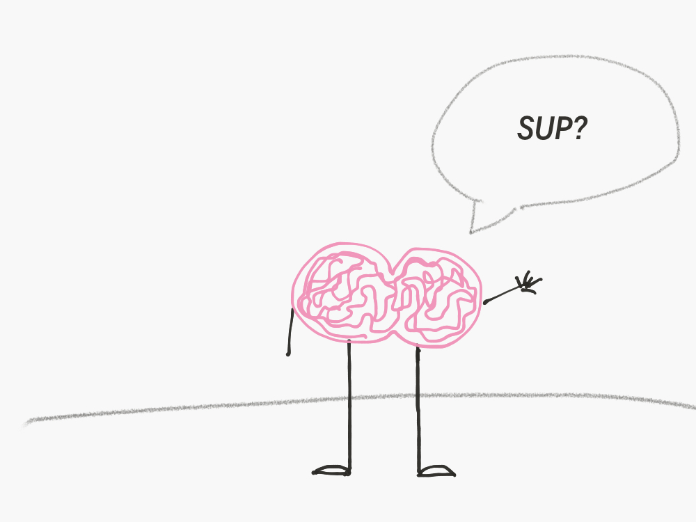
For a modern person reading this now, raised on the ideals of autonomy and freedom, those ideas might sound evil. They do for me.
In reality, they were not. If you are a leader of any large organization before the end of 20th century, be it a government, an army of a corporation, you simply had no choice.
Establishing communication among the vast amount of people was impossible. Giving autonomy to people would most likely lead to chaos since there would be disparity in the information that people have. Each person would be making their own local decisions that would not lead to business objectives or connect to what other people are working on.
A one-way communication flow (from managers to individuals) was a brilliant solution. Yes, people felt miserable being cogs in the machine, but that was the only way a machine could function at scale. It allowed organizations with little internal communication and feedback to succeed.
But then the Digital Revolution happened and again, it changed everything.
Communication became easy, and even people in large organizations could collaborate momentarily. Information became available and people could learn quickly. Managers were no longer better informed than workers. Silos became ineffective. There was no pre-designed manual for innovation.
Although very few organizations kept working the same way they used to, the majority just slightly tweaked it, but still kept the same outdated structures and processes. Biannual 100 question surveys or annual performance reviews, the reliance on managers to provide guidance – all of those things are a manifestation of how we used to work.

But it simply doesn’t work anymore.
We are experiencing what Gallup calls an engagement crisis. Just in the US 70% of people at work are disengaged and for each of them, companies lose at least $230-$850/month in salary due to reduced productivity. People underperform and leave, but replacing them costs 20%-300% of their annual salary.
Compare that to companies that are embracing better ways to work and where the majority of people are engaged. Just financially they enjoy 147% higher earnings.
The way we work doesn’t work anymore. Principles that were effective for us in the Industrial Age don’t help us to reach the best results today. The change is due.
😻 A better solution
Back in Cyprus, when I got interested in the how ants collaborate, I stumbled on a fascinating concept, called bioteams.
Bioteams is a term coined by British author and researcher Ken Thompson. He frames bioteams as organizational teams that operate on the basis of the natural principles that underpin nature’s most successful teams.
And by nature, he means a rather broad range of things. Animals and insects, single-celled and multi-celled organisms, human immune and nervous systems, even forests and rivers.
Truth is, they know their team shit.
For example, in 2011, several engineers at Georgia Institute of Technology published a research on how ants survive floods.
Turns out although a single ant struggles hard in water, by linking their bodies together ants can create a floating raft that can keep them alive for days.

Those rafts can be created from as little as dozens ants to as much as 100K. It’s surprisingly buoyant and can float for weeks, allowing ants to survive.
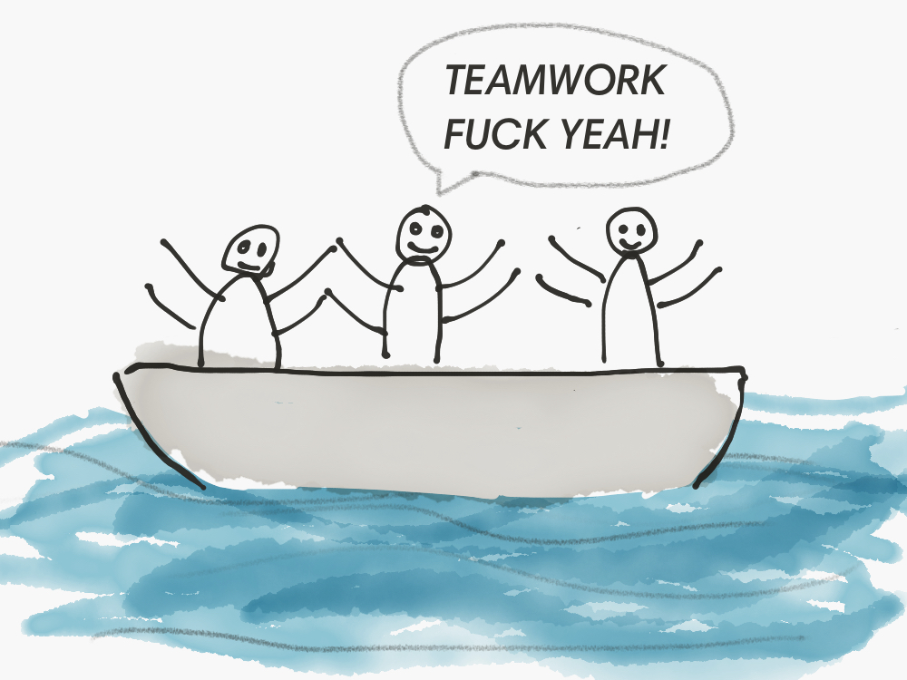
It doesn’t stop with rafts. To cross a gap, they’d often assemble themselves into bridges.

Some of the ant species are so much into teamwork, they work together as a group 90 percent of the time. Given just a little time, an ant colony will transform a pile of dirt into a web of extremely intricate underground structures.
Their principles of work are already used to improve swarm robotics and make advances in medicine (by understanding how cells transform into organs).
But all those principles may not be that new for us. Instead, they may be something we forgot.
There is a pretty popular diet, called Paleo. I’m far from being a dietary expert, but the idea behind it is that we evolved on a very specific type of nutrition and thus we should exclude or limit foods that were not a part of human ration before the Agricultural Revolution.

I’d probably find it hard to cut on some sweets, but I can see the logic behind that. If we spent tens of thousands of years eating a very specific type of food, our bodies probably got used to it best.
The exact same logic works for the way we collaborate. If we spent tens of thousands of years collaborating in little autonomous hunter-gatherer bands, at some point it should’ve become part of our DNA.
And apparently it did. In 1990s a British anthropologist Robin Dunbar found a correlation between primate brain size and an average social group size. Humans, he proposed, can comfortably maintain only 150 stable relationships (the critics of the idea state that it’s even less than that – around 50 or 80).
The theory was actually put into practice by Gore, the makers of the Gore-Tex fabric. The founder, Bill Gore, found through trial and error that when the team grows to more than 150 people, the attitude moves from “we made a decision” to “they made a decision”. So the company started limiting the number of people at its factories to 150. As soon as they hit that number, they’d build another self-sustaining 150-person factory. As a result, today Gore is a 10,000 person giant making $3B a year and repeatedly ends up as one of the best places to work.
Bioteams, similarly, are how we evolved working. Those principles are natural for us.
After agricultural and later industrial revolution that natural way of working couldn’t be sustained at scale. But today technology enables us to work in our natural way, but at scale.
There is a pattern in all those societal shifts. It’s easy to communicate and make autonomous decisions in a small group of broadly skilled individuals. As either a group becomes bigger (and communication becomes inefficient) or a required skillset simplifies (and autonomy can’t work), a strong hierarchy is required. As soon as one of those things changes – either the group becomes smaller or it becomes easier to communicate or the required skillset becomes more complex, hierarchical organizations stop working.
That’s exactly what happened. And bioteams may be a solution.
👶 Better teammates
There is a popular medieval proverb saying “The bear wants a tail and cannot be lion” (actually I have no idea how popular it was, I just googled it today). It means if you were born, say, a peasant, you shouldn’t try to become a noble. It’s a centuries-old myth that was reinforcing a status quo.
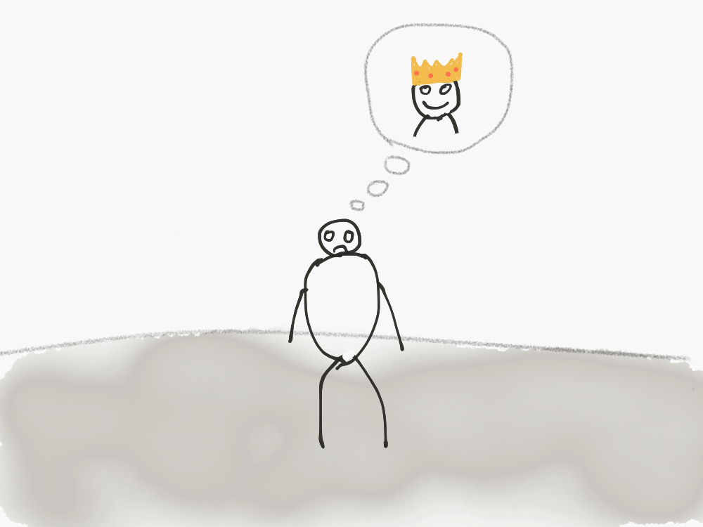
The exchange of information over the Internet gave us an instantaneous access to knowledge. It leads to two fundamental implications for the way individual teammates work.
👣 Career path
Historically researchers thought ants to be split into specific casts, each of them born to do a particular function. Some should feed the larvae, some should defend the territory, some should gather food. The idea made sense, especially as it proposed very reassuring parallels with the Industrial Age human society.

Now we know it’s not true. Ants don’t have predefined tasks. They change them. Some weeks they defend the colony, others they search for food. As they grow older, their responsibilities change as well.
Or take our own body. We also used to believe that the body consists of cells predefined to do specific functions. Turns out most of our cells originate from several identical ones and some cells, namely stem cells, can change their type.
The idea of someone being predefined to do a certain job is outdated since most of the time required knowledge is easily obtainable.
It leads to two conclusions.
First conclusion. A career ladder is not a ladder but a path. The way you grow should not be limited to becoming a manager, it should be more flexible.
Kevin Goldsmith, Spotify’s executive wrote a series of blog posts on creating career paths that resonate with these ideas.
They defined three paths you can take. You could either manage other people and grow your impact by helping others succeed. You could master your professional area and grow your impact by solving cross-functional problems. Or you could explore and move around between different roles.
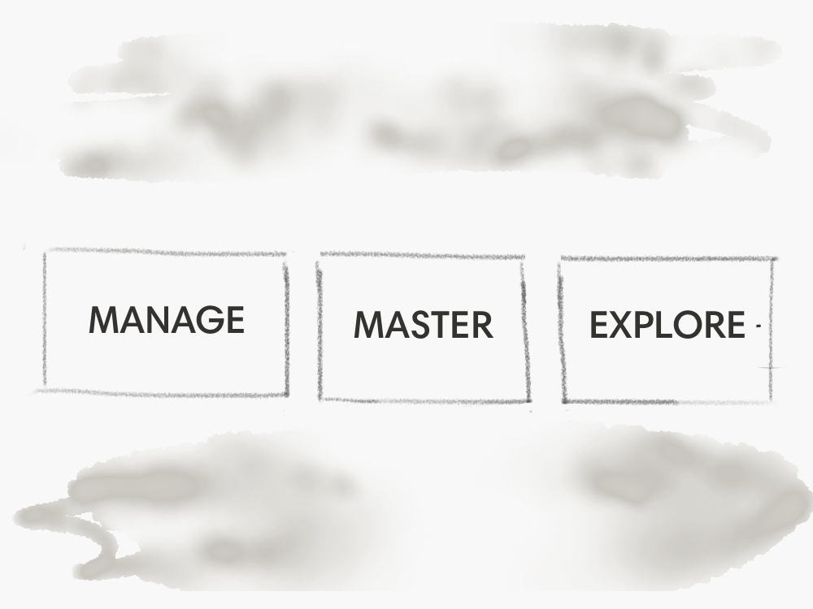
On top of that, they made it easy to switch the path you are on, whenever you want to try something else.
At Intercom, there is a very similar approach to career development. I’ve seen people become managers, grow into influential individual contributors or completely switch careers while staying in the same company.
Second conclusion. You shouldn’t keep people in roles that they are not set up for success.
Firing fast someone who underperforms might be an answer. But when the person is engaged despite that, a better solution might be finding a different role for them to grow, learn and contribute. Not exploring that as an option leads to wasted resources and bitterness on both ends.
👔 Everyday leaders
Another interesting feature of many bioteams is the lack of a clear leader.
Take ants again – they are able to build highly efficient organizations without having a leader.
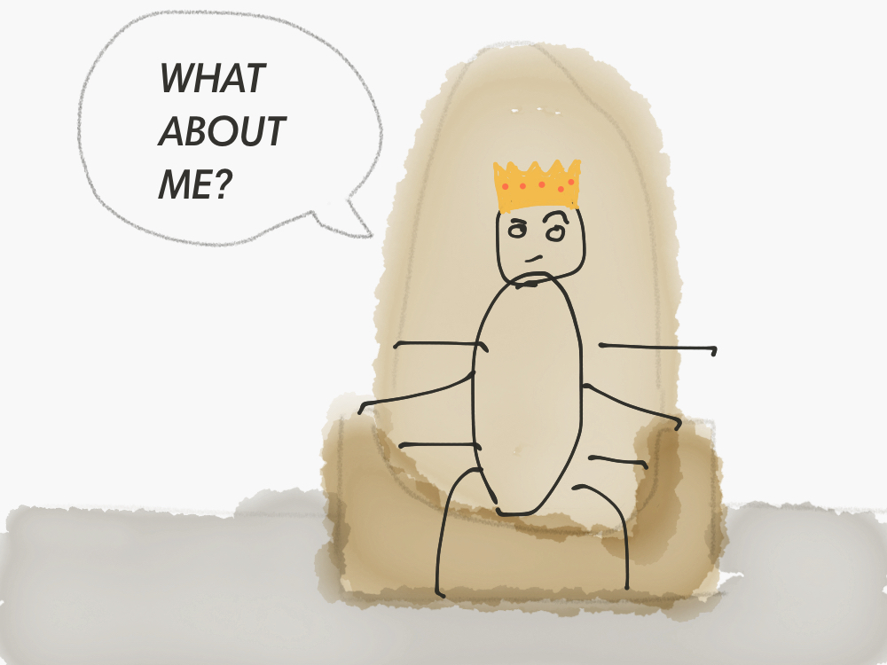
Yep, ant colonies don’t have leaders (I presumed they do). Although there is a queen ant, it’s not a monarchy. Queen’s job is solely reproduction. She doesn’t tell other ants what they need to do. Nor she controls them in any other way.
When ants carry some load together, one of them usually sits on top of the load, carried by other, so that it can lead the way.

Interestingly, the role of the ant on top is always changing. Someone who was just leading the way, switches to carrying the load. They are basically sharing leadership and each ant is empowered to lead.
Or take geese. When they migrate they travel in a V formation and the goose in front rotates.

They do it for two reasons. First, it’s a tough job to lead a V formation, since the leading goose takes on the most of the air friction. So after a while, it gets tired and flies back to rest. Second, a single goose doesn’t actually know the whole route. They just know parts, so whenever a leading goose stumbles on the unknown patch it goes back, while another one, that recognizes it, takes the lead.
It’s natural for bioteams, instead of being fanatical about leading, be flexible so that the most appropriate person leads at a specific moment.
Our definition of leadership is outdated.
First, leadership should be about taking ownership of the result. That’s something that speaks to many of us, if not all. It’s important to uncover issues that each specific teammate deeply cares about, and empower them to take ownership of those issues. You don’t need to be a manager to be a leader.
Lately, there has been a lot of criticism of the concept of Holacracy (a deep dive into it deserves a future blog post). But an undisputable upside of Holacracy is empowering each teammate to be a leader in a certain situation or domain. It mobilizes everyone, not just leaders for solving problems.
Second, leadership should be about helping people grow, not about telling them what to do. A manager is there to serve their team, not the other way around.
Facebook probably has one of the most exciting approaches for both of those things, that I heard of. They have eight levels of mastery that people could be at. When you reach level five, you may choose to become a people manager. It doesn’t come with a salary or influence increase, you just start doing a different kind of work. That ensures that people, who become managers, do it for the right reason – out of the desire to help people grow, not desire for power.
Poor leadership is one of the key factors for disengagement and turnover. It’s time to change it.
👯 Better teams
Any team, by definition, requires collaboration between a number of individuals to function. So improving how individuals work would not be complete without improving how they cooperate as a team. Enablement of that cooperation is another fundamental benefit of the spread of the Internet.
🎨 High level of autonomy
Autonomous and self-sustaining teams play one of the most crucial roles in bioteams.
Bees form dedicated teams to collect nectar or store it. Each team is autonomous and skilled enough to do any of those things.
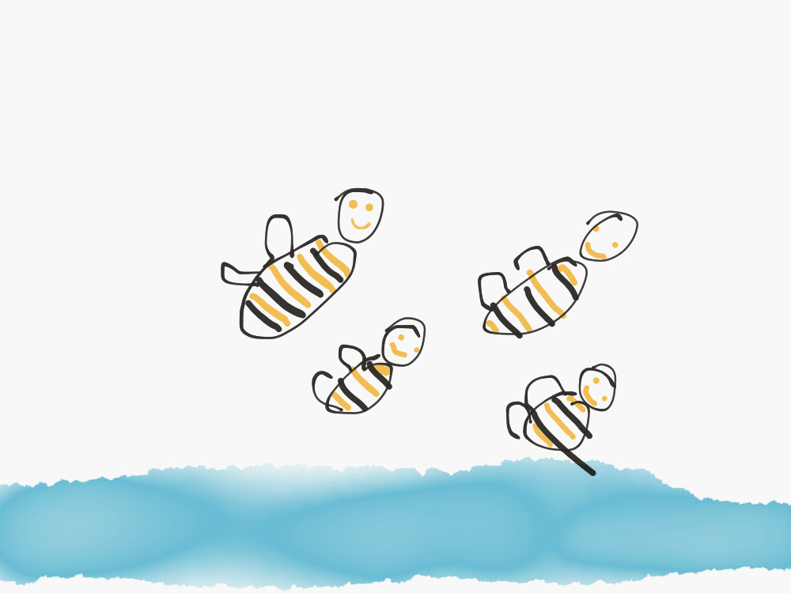
Ants assemble into teams when faced with opportunities, like getting food or dangers, like fighting off the intruder.
Those teams seem somewhat spontaneous, for the lack of a better word. Although grouped in a team for the length of doing the task at hand, ants switch teams afterward. It helps them acquire extra knowledge from other ants and share that knowledge with their next team.
There seem to be two lessons that we can apply to humans here.
First, teams should not be static. Allowing people to regularly move between teams, would create opportunities for sharing the best practices. Even the downsides, like the loss of background knowledge and changing the team dynamic can be easily mitigated by making the move temporary and relying on weekly tours.
Second, teams should fully own their work.
HubSpot brilliantly implemented this principle in the structure of their Product team. After a number of experiments, they decided to create a large number of tiny 3 person teams. Each of those teams was fully responsible for a contained part of the product. By fully, I mean they were building the product, thinking about the roadmap, fixing bugs, supporting customers, literally doing everything you’d expect them to do if it was a standalone startup.
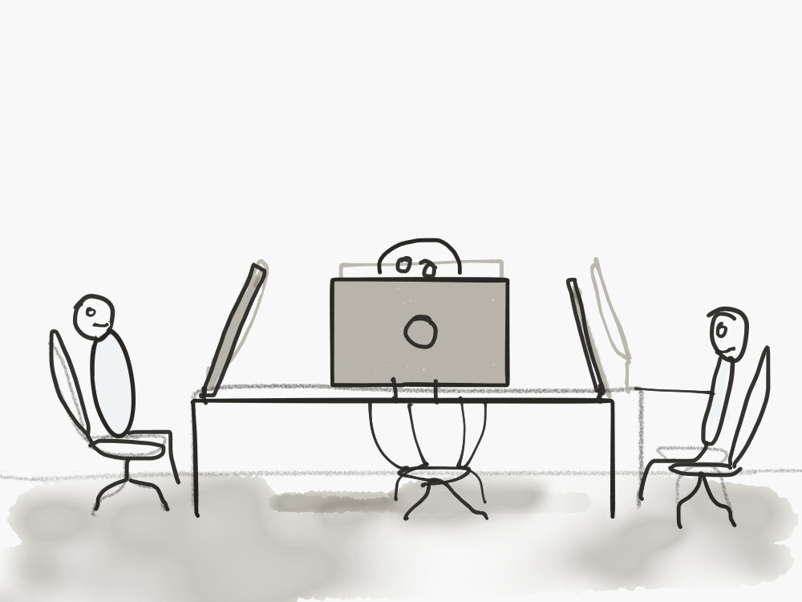
The results were astounding. Product team had both the highest eNPS score of any team in the company by a considerable margin, and employee retention rates were off the charts.
💃 High level of collaboration
The key to successful collaboration in bioteams lies in effortless instant communication.
Natural teams communicate a lot. Most of the communication is actually pretty simple and can be broken down into two types. It’s either opportunity messages where they broadcast there is something interesting like food. Or it’s threat messages where they broadcast the danger.
For example, ants do this by emitting special pheromones that are instantly picked up by their peers. If one stumbles on food, it’ll communicate that to others. If there is a danger and it’s hurt, it will tell others to stay away. If the queen needs any assistance, it will ask for help.

Or say, bees do little dances to point to the food they’ve found with the angle of the waggle indicating where to look for those resources.
For the first time in history, we are able to communicate instantaneously and collaborate around anything anywhere. And it helps. A well-established communication within the team leads to a 35% increase in team performance.
Better ways to communicate has already become an integral part of the way we work, especially in the tech industry. Gradually teams in other areas are embracing it as well.
For example, ITV, UK’s largest commercial TV network, after implementing Slack was able to solve an outage in 10 mins, instead of over an hour as it used to.
📏 Ensured alignment
Changes, especially fundamental changes that involve giving people more autonomy, are usually very very very hard to successfully implement.
Misalignment is the default state of any organization. If everyone is autonomous and sort of freestyling it will almost certainly lead to misalignment.
Despite that, bioteams show there are two things that can sustain a new organizational structure.
🌟 A common belief system
Bioteams, for example, ants build their organizations around a common mission. For them, it’s survival of the species.

Driven by the same mission, encoded in their biology, they are able to cohesively work together. That’s the reason they protect the queen (it’s the only female that can give birth). That’s the reason they care for larvae and bring food to the colony. Everything, from their societal structure to their individual behavior, is driven by this singular mission.
We, humans, are not too different. Our civilizations were built due to shared missions.
In his books, Sapiens, Israeli historian Yuval Noah Harari talks about a concept of a common myth – a shared fiction that we choose to believe in. Religion, money, ideas are all common myths.

Common myths give us the ability to cooperate in large numbers. When ants work together they do it within their colony, driven by their basic biological mission. We can create a strong mission that would allow us to cohesively collaborate with complete strangers, who share the same belief system.
A company belief system, namely it’s mission, vision and values, is critical for creating alignment. It’s a handbook that anyone can use to make decisions. Anytime you’re in doubt, you can look at the mission, vision or values.
Research shows that teammates in companies with a strong mission are 4 times more satisfied at work.
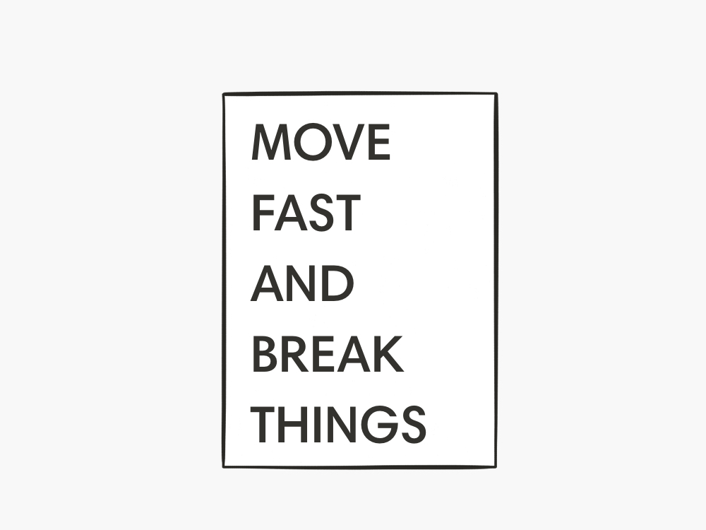
No surprises that smart companies embrace the mission and live by it. Mark Zuckerberg often credits Facebook’s ability to expand from 1,700 to 12,000 employees in five years, while maintaining a high performing culture, to their adherence to the mission.
💬 Continuous feedback
Having a common belief system is crucial, but completely useless unless it’s adhered to. To make sure the day-to-day behaviors are aligned with that belief system continuous feedback is required.
Let’s take ants again (I know we’ve been using them too much as an example already, but they are probably one of the nature’s best teams). Ants share continuous feedback with each other all the time.

Well, not a human type of feedback.
They share feedback in order to teach each other. It actually makes them the only group apart from mammals where it has been observed.
Ant who knows how to find food would teach others through a process called tandem running. When they go for food together, the knowledgable ant would lead and react to the progress of the follower. It would slow down when the follower lags and speed up when they catch up. This bidirectional feedback loop maximises the speed at which the two can progress while allowing the follower to memorize the path and its surrounding landmark features.

Sometimes ants also mark the trail with ‘no entry’ pheromone to deter foragers from taking the wrong branch at a trail bifurcation.
Similarly to that, honeybees share feedback by signaling stop when someone tries to go to a dangerous foraging location.
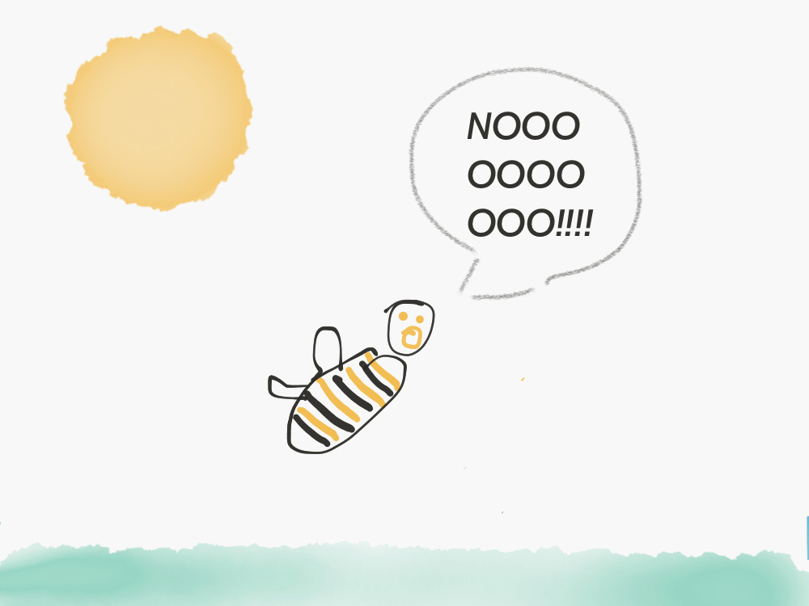
Just as for bioteams, feedback is fundamental for human teams.
It’s something that people (especially those under 30) crave on a daily basis (72% of them to be precise). Yet only 19% of them get it regularly. Considering that the difference between getting regular feedback and getting no feedback can end up to 30x difference (yep that’s 3000%) in employee engagement, it’s striking there are still companies who haven’t embraced continuous feedback.
Many leading companies have already ditched old-school performance processes and instead implemented a culture of regular feedback. Both startups like Buffer and huge companies like GE, Adobe, Accenture and Deloitte all introduced regular feedback processes to ensure people know what’s going well and what should be improved.
🌅 Conclusion
There is a pattern I’ve been noticing for a while.
At first, things work well. Time passes and a problem emerges. We find a solution to it and it works for a while. But then time passes again and things change and a new problem emerges. At that point, it’s tempting to start inventing a new cool solution. But a lot of times, it’s worth thinking whether something that worked initially, could be applied again. Circumstances change and what was unscalable before suddenly becomes applicable.
I faced this situation multiple times as a designer. There is a problem, say due to technical limitations. You solve it with a new approach, but that approach also stops working after a while. It’s so easy to disregard any previous solutions. But sometimes that initial technical limitation is not a limitation anymore. And it ends up the most obvious solution to the problem.
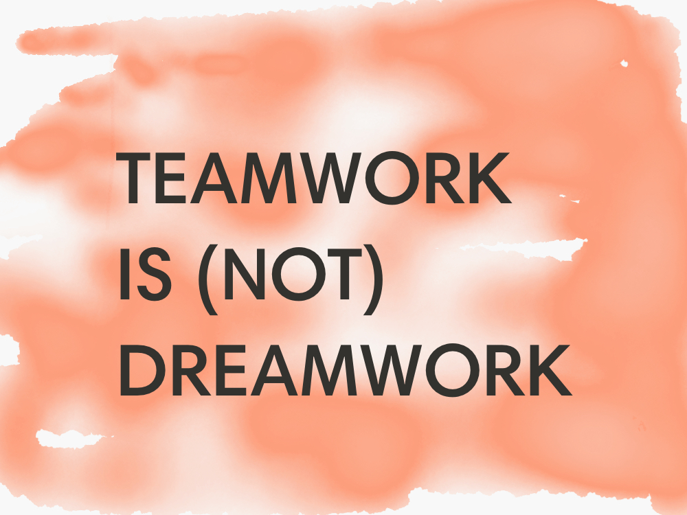
Teamwork is not a dreamwork. The way we work is broken. People are disengaged, organizations are dysfunctional.
A solution though may be to return to the way we worked naturally, as the result of many years of evolution. Since for the first time, due to technology, we can do it at scale.
With autonomous teams and empowered teammates sharing the same belief system and relying on continuous feedback, organizations can finally make the way we work, work.